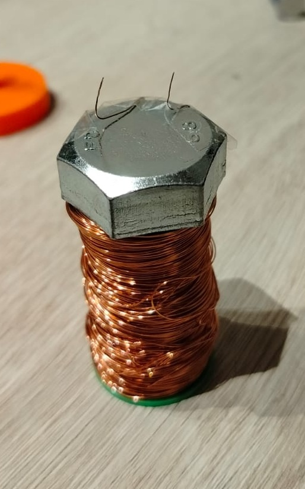

How it works

A magnetic levitator works by continuously adjusting the strength of an electromagnet based on the distance of the object you want to levitate. The object needs a permanent magnet attached to it.
The key component is a Hall effect sensor, which detects magnetic fields. When the permanent magnet is close to the sensor, the electromagnet receives less power. When it moves away, the electromagnet pulls harder.
This creates a self-regulating feedback loop: the object starts falling, the electromagnet pulls it back up, it gets too close, the electromagnet weakens, it falls again. This constant cycle is what keeps the object suspended in mid-air.

What makes this circuit elegant is its simplicity: there is no microcontroller involved. The entire control loop is handled by a single N-channel MOSFET driven directly by the Hall sensor output. The sensor voltage rises and falls with the magnet's position, and that signal alone is enough to modulate the current through the coil in real time. A flyback diode protects the circuit from voltage spikes when the electromagnet switches off.
This was my first physical electronics project. I built everything from the ground up: the coil winder to wrap the copper wire, the electromagnet itself, and all the mechanical and structural parts. The 3D design was also done from scratch, learning everything along the way.
Video
Files
GLB files — 3D printed parts
All structural parts were designed and printed in PLA. Includes the main housing, coil former, and mounting bracket.